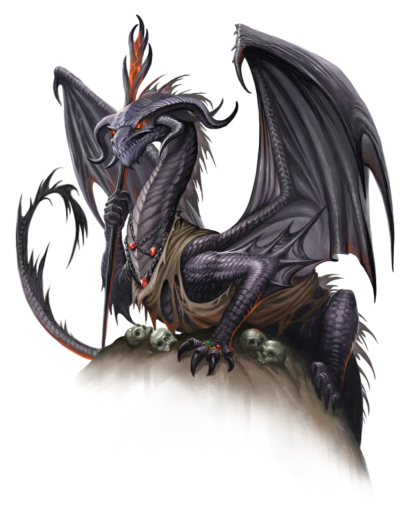

龙语讥讽
黑龙将尖刻讥讽升华为一门艺术，以辛辣的妙语激怒或挫败对手、敌人，或仅仅是惹恼它们的人。黑龙很少浪费时间进行纯粹基于粗俗外貌的侮辱。相反，它们追求更微妙、更具杀伤力的讽刺，试图削弱生物的自信并暴露其更深层的心理弱点。当然，如果敌人过于肤浅，黑龙也会不情愿地选择低级的人身攻击。
黑龙 Black Dragon |
|
|
永光黑龙从完成永恒之光仪式的那一刻起，就面临着来自传统派同胞的极端风险。传统派黑龙对他们因变得不同而充满狂热仇恨，并暗自恐惧仪式可能使永光龙变得更强大，令传统派终有一日也遭遇相同命运。幸运的是，黑龙通常相当独居，除非必要，甚至远离自己的家族。因此，当另一头黑龙发现所发生之事时，他们往往已来不及采取行动，因为永光黑龙可能已在力量与声望上突飞猛进。若一头准永光黑龙领地内或附近有异常大量的其他龙类，它最好采用诡计来掩饰其已执行永恒之光仪式的事实。伪造自己的死亡、假装进入长眠，或以此类方式解释长期缺席，是最容易获得喘息之机的方法，但有时这并不足够，尤其是当他们没有合适的地方藏身并隐匿宝库时。在这种情况下，黑龙可能会安排其他事物来分散邻居的注意力，例如怪物侵扰或冒险者袭击。 永光黑龙将不惜一切代价取胜的渴望以及击败对手时的狂喜，倾注于冒险时所用的战略与战术之中。许多永光黑龙以独行者的身份开始冒险生涯，但很快便学会教训：在承受那种激发魔法成长的冒险时，团队协作方能保命。待到他们准备好加入冒险团队时，他们已能与团队其他成员合作，但这并不意味着他们之间毫无摩擦。黑龙言辞尖刻讽刺，极度好胜。这种组合并不总能给冒险同伴带来愉快的相处体验，若同伴中有人与黑龙在嘲讽或比试中互相升级，可能会导致两位冒险者之间的挑战不断升级，因为黑龙拒绝退让。然而，在一个乐于任由黑龙习性发挥的团队中，黑龙最终会与同伴建立起融洽关系，并将其犀利的言辞与好胜心更多转向团队的敌人。当完全融入团队时，永光黑龙是无与伦比的伏击者，熟习快速突入突袭、游斗、隐匿和以队伍目标为己任的诡计。永光黑龙可能会在给予敌方致命一击、令其计划功亏一篑之前，说出一句令人枯萎的一针见血之语，以加深对方的挫败感。永光黑龙喜爱那些能让它们在战斗中穿梭出入、发动伏击并在对手落败瞬间加以羞辱的职业，例如吟游诗人、游侠、游荡者和武僧。 龙语讥讽 黑龙将尖刻讥讽升华为一门艺术，以辛辣的妙语激怒或挫败对手、敌人，或仅仅是惹恼它们的人。黑龙很少浪费时间进行纯粹基于粗俗外貌的侮辱。相反，它们追求更微妙、更具杀伤力的讽刺，试图削弱生物的自信并暴露其更深层的心理弱点。当然，如果敌人过于肤浅，黑龙也会不情愿地选择低级的人身攻击。 黑龙特质 Black Dragon Traits 你出身于一脉统治沼泽、刻薄孤僻的黑龙世系。 |
  |